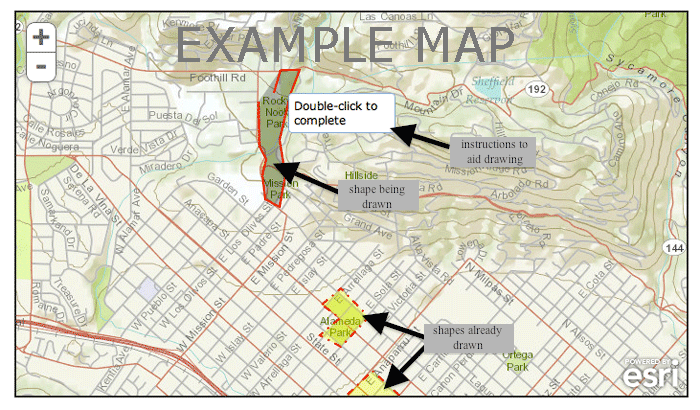

On the next few pages, you will be asked to use a mapping tool to draw shapes to answer questions about the Santa Barbara area.
To draw shapes:
1) left click on the map to begin drawing a shape.
2) double click the left mouse button to close the shape.
3) If you are unsatisfied with the shape you have drawn, right click on the shape to delete it.

Navigation:
1) To zoom in and out, use either the plus and minus symbols on the map, or use your mouse scroll button
2) To move the map view, press and hold the left mouse button and move the mouse to drag the map in the desired direction.
| |
Please be sure to consider all area between Winchester Canyon (Goleta) and Toro Canyon Rd (Summerland).